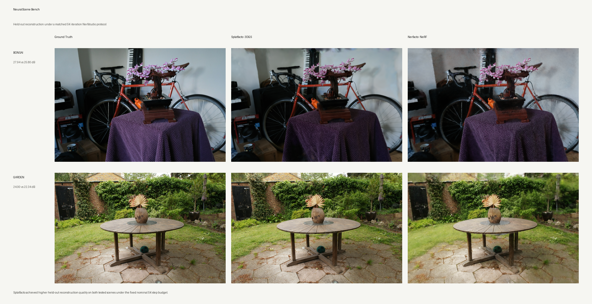

Human performance into
production-ready 3D.
Technical Artist connecting Digital Humans, Performance Capture, Technical Animation, Real-Time Graphics, and Neural Graphics R&D.
I turn captured human geometry, textures, and motion into production-ready characters, animation, and real-time systems across Maya, MotionBuilder, Unreal Engine, and Unity, while researching Gaussian Splatting and neural scene representations for emerging 3D content workflows.
Selected work in Digital Humans, Performance Capture, and Real-Time R&D.
From a single-subject digital human pipeline to a ten-character production and a custom historical reconstruction, each project addresses a different production problem.
 01 / FLAGSHIP · DIGITAL HUMAN
01 / FLAGSHIP · DIGITAL HUMAN
Digital Human Shininho
An end-to-end digital human case built from a real-person volumetric source through a Unity prototype, Wrap + MetaHuman reconstruction, hybrid body/facial capture, Maya/MotionBuilder cleanup, and Unreal performance assembly.
 02 / SCALE
02 / SCALE
Row, Row, Row Your Boat
Processed ten depth-video identities into MetaHumans, then handled per-character skin and hair look development, facial performance, canon timing, multi-character rendering, and final delivery.
 03 / CONSTRUCTION
03 / CONSTRUCTION
Gang Se-hwang Digital Human
Reconstructed a custom digital human from a historical portrait, including approximately 256 facial blendshapes, an ARKit facial pipeline, hair cards, Hanbok Alembic cloth, Unity HDRP look development, and a museum kiosk installation.
Graphics R&D, multi-performer capture, age variation.

Confidential Real-Time Game
Perlin vertex displacement, runtime directional flow, raymarched metaball liquid, fixed-topology cloud growth.
When It Seen
Synchronized MOVIN TRACIN body capture with Rokoko/iPhone facial capture in Unreal, then delivered full-character Alembic caches for downstream Houdini simulation.

Yaloo Digital Human
Depth-video MetaHuman Identity, CC4 child-body integration, material-driven middle-aged / elderly variations.
From captured humans to neural 3D representations.
I am extending my capture and real-time pipeline work into Gaussian Splatting, NeRF, neural rendering, compression, and GPU systems. The current studies benchmark static 3D scenes and establish the representation, coding, and systems layer I would extend toward dynamic human and 4D capture workflows.

Gaussian Splatting, Neural Scene Representation & Delivery
I built a connected set of experiments around a practical question: how can reconstructed 3D content retain visual quality while becoming faster to optimize, smaller to deliver, and easier to execute in real-time systems?
NeuralScene Bench compares Splatfacto 3DGS and Nerfacto NeRF under the same Nerfstudio data and evaluation protocol. Gaussian Growth Efficiency studies training and densification budgets across scenes. SplatStream Lab evaluates pruning, FP16/INT8 quantization, payload size, and held-out reconstruction quality using full CUDA rendering. Ray-Scene Acceleration implements and profiles spatial acceleration structures in C++17.
Research claims are intentionally bounded: matched iterations are not matched convergence, compressed payload measurements are experimental coding results, and static-scene benchmarks are not presented as completed 4D human reconstruction.
I work across character, capture, graphics, and R&D.
My role is less about a single software package and more about finding production bottlenecks across the pipeline, connecting art and research teams, and turning experiments into documented, repeatable workflows.
Digital Human Pipeline
Scan/depth source cleanup, topology/UV, Wrap, MetaHuman Identity/From Template, custom reconstruction, texture, eye, and hair troubleshooting.
Maya · ZBrush · Wrap · MetaHuman · CC4Performance & Technical Animation
Optical, markerless, and facial capture, cleanup, reconstruction, retargeting, body-face synchronization, Sequencer and Control Rig assembly.
OptiTrack · MOVIN TRACIN · Rokoko · MotionBuilder · UnrealRendering, Neural Graphics & Systems
Real-time lookdev, shaders, raymarching, Gaussian Splatting, NeRF evaluation, CUDA-backed rendering experiments, compression, profiling, and production-oriented technical prototyping.
3DGS · NeRF · CUDA · PyTorch · Unity · Unreal · C# · HLSL · Python · C++Problem → Decision → Implementation → Result.
Each case study shows the production problem, the reasoning behind the chosen approach, how it was implemented, how the experiment was measured, and what changed in the final result.
Problem
What failed, broke, or blocked production or research?
Decision
Why this representation, tool, pipeline, or trade-off?
Implementation
How was the solution connected across capture, character, graphics, and engine?
Result
What became more usable, measurable, efficient, or repeatable?
I work between artistic goals and engineering constraints. My focus is digital humans and performance capture, solving technical problems as characters move from captured source data to animation, rendering, and real-time deployment. My current neural graphics research extends that same pipeline thinking into 3D Gaussian Splatting, NeRF, compression, and GPU-based evaluation.
Additional work in film, installation, media art, and neural graphics research.